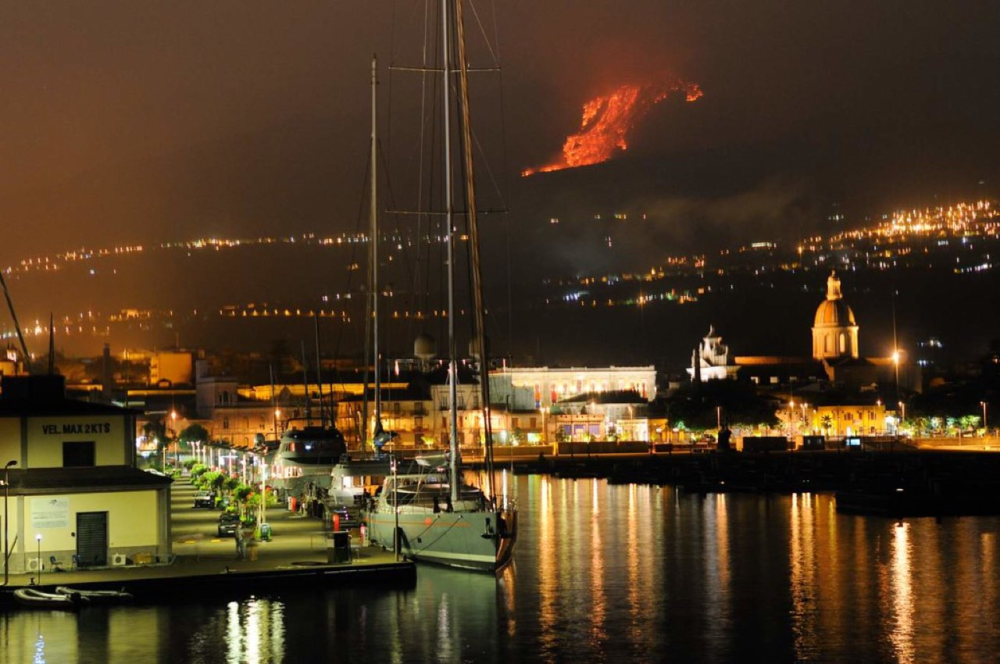
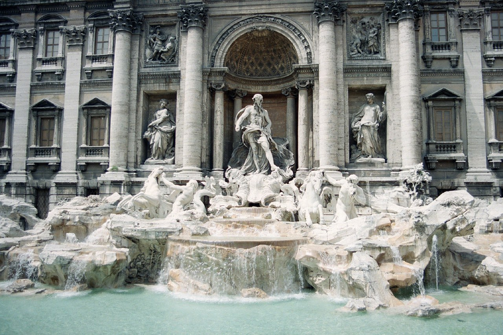
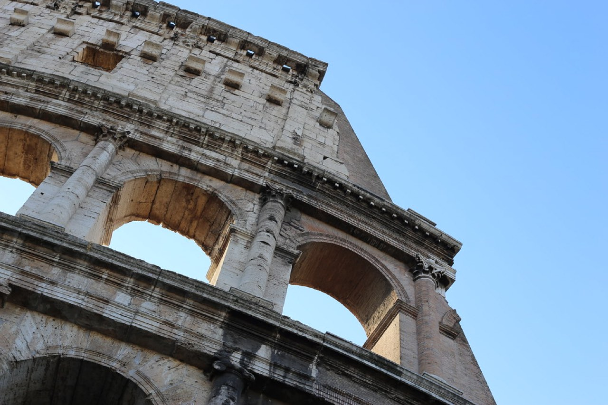
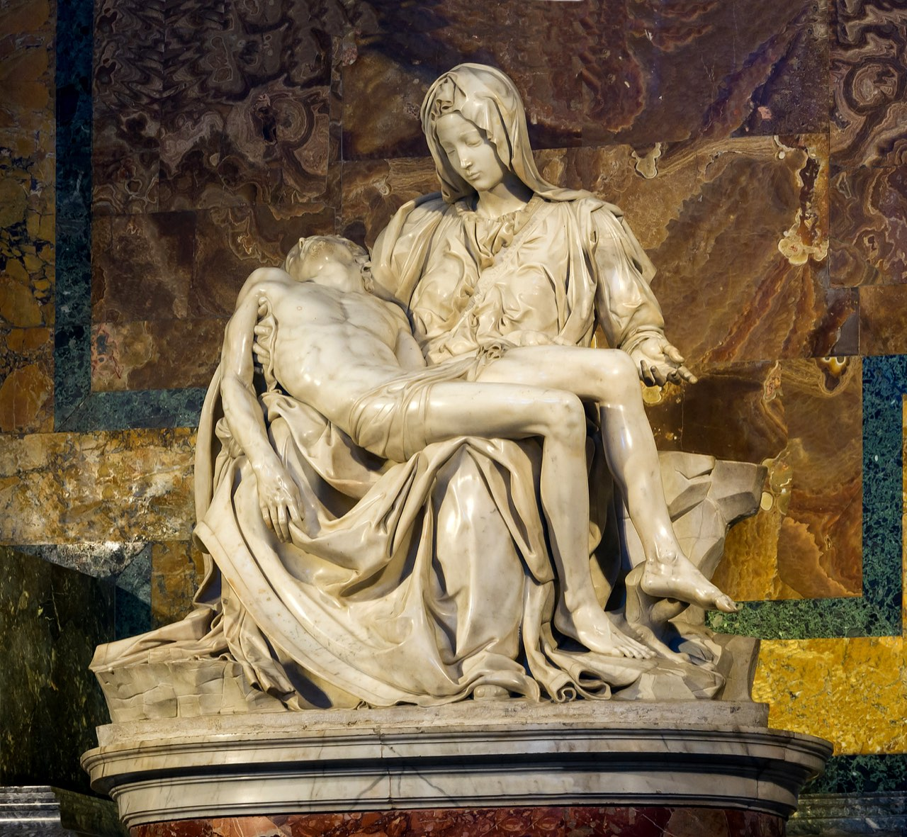
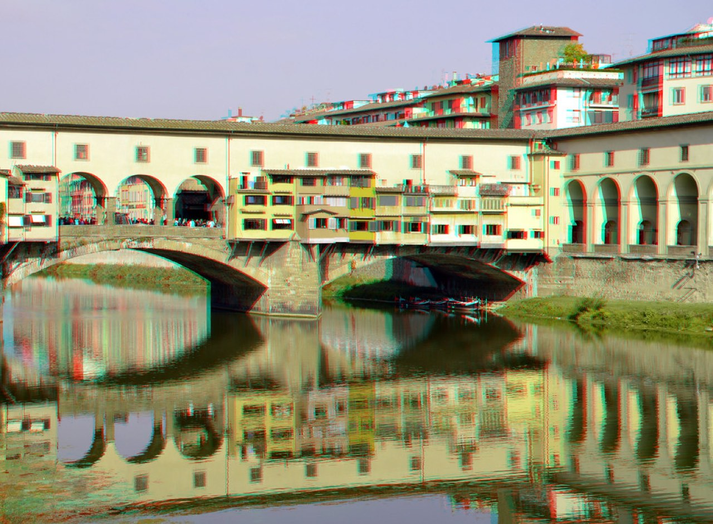
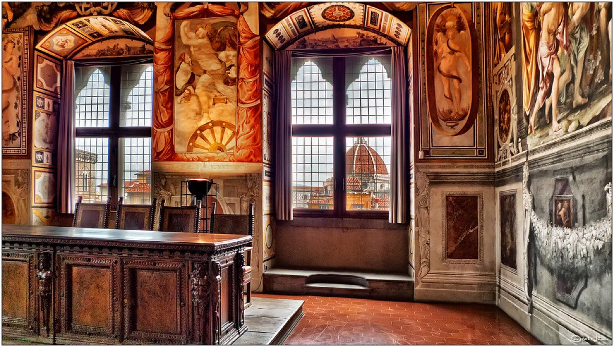
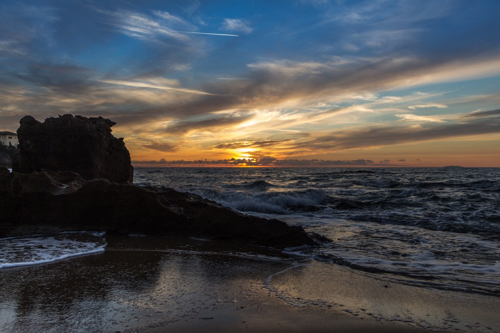

images/hero.jpg をこのHTMLと同じ階層の images フォルダに入れてください| 往復航空券参考~ | ¥165,000 |
| 宿 5泊参考~ | ¥110,000 |
| 都市間 高速鉄道(ローマ→フィレンツェ)参考~ | ¥6,000 |
| 食事推定≈ | ¥45,000 |
| 美術館・観光（予約料含む）推定≈ | ¥22,000 |
| 現地交通推定≈ | ¥8,000 |
| 予備費推定≈ | ¥20,000 |
| 合計 | ¥376,000 |
実査確定 / 参考~相場 / 推定≈概算。出発前に最新価格を要確認。

images/day1.jpg を入れてください
images/day2.jpg を入れてください
images/day3.jpg を入れてください
images/day4.jpg を入れてください
images/day5.jpg を入れてください
images/day6.jpg を入れてください